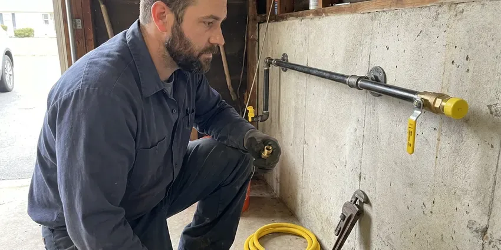

Plumbing Installation in Burlington, VT
Plumbing installation in Burlington, VT from CKV Plumbing: the right pipe size and the right fittings, and a pressure test on every new line.
- Same-Day Water Heater Swaps
- Licensed Vermont Plumbers
- Local Burlington Plumbers
- Upfront Written Pricing
Professional Plumbing Installation in Burlington, VT.
Our trucks carry common heaters and fittings, so many installs wrap up in one visit.
Plumbing Installation for Homes and Businesses in Burlington, VT
CKV Plumbing installs the equipment that keeps hot water and gas moving through your house, and most of it sits in a garage or utility closet. That means tank and tankless water heaters, softeners, PEX repipes, water service lines, gas piping and backflow preventers. Most are one-day jobs.
Our expertise includes:
- Gas line and water service line replacement
- Sump pump and sewage ejector installs
- New supply and drain lines

Additional Plumbing Installation Services in Burlington, VT
We install water heaters, pumps, lines, and fixtures across Burlington, VT with precision workmanship that meets every local code.


Customers
Why Choose CKV Plumbing for Plumbing Installation in Burlington, VT?
Equipment only lasts as long as the install behind it. Bad flue pitch, no expansion tank, an undrained relief line or an undersized gas line can cut years off a new heater and put carbon monoxide in the house. Each of those gets checked.
- Customer Satisfaction, Floors get covered and the work area is cleaned up before we leave.
- Local Expertise, We work under Burlington, VT code every week and know what local inspectors check.
- Quality Brands, We install Rheem, A.O. Smith, Bradford White, Navien, Rinnai and other well-known brands.
Citywide Coverage
Garage water heater swaps and whole-home repipes both come through our dispatch for every part of Burlington. We fit installs around your schedule and can start early if you have to get to work. Saturday slots exist too.
Experienced Team
Our plumbers have years of hands-on installs behind them, and they train on new equipment as manufacturers release it each year. Tankless controls and smart leak shutoffs change fast. They keep up.
Safety-First Approach
Permits get pulled whenever the work requires them, and we schedule the inspection so you do not have to call the city yourself. Backflow devices are tested on install day to protect the public water supply. Test tags stay on the device.
Trusted Certified Burlington Plumbing Services Professionals
At CKV Plumbing, we are proud to offer certified plumbing services throughout Burlington, VT. Credentials matter in this trade. Our plumbers hold recognized industry credentials, and they follow strict safety and quality rules on every repair, installation and maintenance call we run.
Call Us Now PHCC Plumbing Contractor Recognition
PHCC Plumbing Contractor Recognition Better Business Bureau (BBB) Accreditation
Better Business Bureau (BBB) Accreditation Angi Certified Pro
Angi Certified Pro ISO 9001 Quality Management Certification
ISO 9001 Quality Management CertificationWhat We Install in Burlington, VT
Water Service Line Installation in Burlington, VT
New water service lines run from the meter to the house, and the old one usually comes out in the same trench. Rocky glacial soil and ledge are common across Vermont, which can make digging for water lines, sewer repairs or septic work slow and costly. We bring the digging equipment the ground calls for. We add a new main shutoff at the entry point. Depth and bedding protect the pipe. Pressure and flow get tested before the trench is closed.

Backflow Assembly Testing and Installation in Burlington
Fire lines and irrigation systems account for most of the backflow assemblies we install. A certified tester checks each assembly on install day and the results go to the water provider. Then the clock starts. Retesting is usually yearly, and we keep a reminder list so you do not miss the date.
Water Line Installation and Replacement in Burlington
Corroded galvanized and brittle polybutylene are the two pipes we replace most. We run new lines in PEX or Type L copper, using crimp or expansion fittings on the PEX and soldered joints on the copper. Rocky glacial soil and ledge are common across Vermont, which can make digging for water lines, sewer repairs or septic work slow and costly. Buried pipe gets sand bedding and proper depth, so rocks and settling do not cut into it later. Above 80 psi, we add a pressure reducing valve.
PEX Pipe Installation in Burlington, VT
PEX bends around corners, shrugs off corrosion and needs far fewer fittings than copper. On a whole-house repipe that means fewer joints hidden behind drywall and fewer places for a slow leak to start rotting a stud. It can also stretch when water freezes. Frozen pipes are a common winter problem in Vermont, especially in older homes with plumbing in exterior walls or unheated spaces. Stretch or not, we still insulate runs in exterior walls and crawl spaces.
Water Heater Installation in Burlington
Tank or tankless, gas or electric, the first question is how many people shower in the morning. Sizing starts with your peak morning demand and the fuel you have, and we look at venting and gas supply before giving a number. Gas heaters need the closest look. Bad flue pitch or a spilling draft hood can send carbon monoxide into the living space. We haul the old tank away the same day.
Sump Pump and Sewage Ejector Pump Installation in Burlington
Basements and crawl spaces that take on water need a sump pump, and fixtures below the sewer line need an ejector. One moves groundwater, the other moves sewage, and they are not interchangeable. Sizing comes first. The pump gets matched to the fill rate, wired to a dedicated circuit and piped out through a check valve.
Electric Tankless Water Heater Installation in Burlington, VT
Electric tankless heaters pull serious amperage, often 120 amps or more for a whole-house unit. We confirm your panel and service can handle the draw first, and a licensed electrician joins the job if they need an upgrade. The plumbing side is simpler. We set the flow rate and outlet temperature so the shower does not run cold when the dishwasher kicks on.

Sewage Ejector Pump Installation in Burlington, VT
A basement bathroom sits below the sewer line, so gravity cannot carry the waste out. The fix is a sealed basin with an ejector pump that lifts waste to the main. We size the pump and basin to the fixtures it serves, vent the basin to code, and put a check valve and a full-port shutoff on the discharge so the pump can be pulled for service. We usually install Liberty or Zoeller pumps.
Local Plumbing Installation Near Me in Burlington, VT
Outside Burlington proper? We cover the surrounding towns too, for homes and light commercial jobs alike. You get the same plumbers and the same rates. The scope, warranty and permit are identical in town or twenty minutes out.
Typing "plumbing installation near me" in Burlington turns up a page of ads and call centers. CKV Plumbing is a local outfit with trucks in Vermont, and our plumbers know the housing stock, the inspectors and the common problems in older neighborhoods. We answer our own phone. Most estimates happen within a day or two of your call.
CKV Plumbing at a Glance
- Licensed and insured plumbers serving Burlington, VT
- 24/7 emergency service with same-day scheduling
- Upfront, flat-rate pricing before work begins
- 4.8-star rated by 553+ Vermont customers
Burlington Map
Burlington Information
- Population
- 44,528
- Area codes
- 802/860/603
- Service area
- Burlington and towns within a 40 mile drive
- Nearby
- Winooski, South Burlington, Essex Junction, Shelburne
Pipe life in Burlington, VT depends on the install as much as the pipe itself. Heating systems, boilers and water heaters work hard through the winter, so annual service helps prevent breakdowns in the coldest weeks.
Expert Services
Call CKV Plumbing for honest, reliable plumbing from people who know the trade in Burlington, VT.
Our Specialized Plumbing Services in Burlington, VT
At CKV Plumbing, you get every kind of plumbing service from one company across Burlington, VT. We go from leak detection all the way to full system installations, for homes and commercial buildings, and we do it quickly at a fair price. Take a look at our core services below:


From Quote to Inspection: Plumbing Installs in Burlington, VT
Here is what to expect when you book an install with our team.
Request a Quote
Call (802) 209-5139 and tell us what you need installed. We recommend equipment and send a written quote.
Permit and Prep
We pull any required permits and set your install date. On install day we cover the floors and shut off water or gas.
Install and Test
We make every connection and test for leaks and proper operation. Then we haul off the old unit and show you the new controls.
Frequently Asked Questions About Plumbing Installation in Burlington
A basic faucet install might run $150 to $350 in Burlington, VT. New water heaters land between $1,200 and $3,000, and a whole-house repipe can be $4,000 to $15,000 or more depending on size and access. We quote after a site visit.
PEX is cross-linked polyethylene tubing for water supply lines. It does not corrode, it tolerates a freeze better than copper, and it goes in faster since it bends where copper needs a fitting. It is a durable choice for Vermont homes, with fewer fittings and fewer leak points. We mostly install PEX-A with expansion fittings.
Venting, gas connections and the relief valve are where DIY installs fail. A licensed plumber builds it to code and keeps the manufacturer warranty intact.
Most of the big ones do: water heaters, gas lines, water service lines and repipes. We pull the permit and book the inspection.
Two warranties apply. The manufacturer covers the equipment, and we cover our labor, with the exact terms written on your invoice before we start. Registration matters. Some brands only give the full tank warranty on registered units, so we register the heater for you.
Yes, rough-in and finish plumbing for additions, remodels and light commercial work. We coordinate with your builder or general contractor on the schedule.
For water heaters, mostly Rheem and Bradford White. Kinetico and Pelican are common picks for softeners, and we will install a fixture you bought yourself as long as it is a listed, code-approved product. Big-box faucets are hit or miss.
Rheem, AO Smith, Bradford White, Navien, Rinnai and Fleck, among others. We recommend a model based on your home and budget.
What People Are Saying About Our Plumbing Experts?

Lisa C.
Water was pouring out from under the washing machine on a holiday weekend. CKV Plumbing talked me through closing the valves over the phone and had a plumber at the house within ninety minutes. It was a burst fill hose.
Emergency Plumbing · St. Albans, VT
Jessica T.
We were adding a gas range in a kitchen remodel and needed a new line run from the meter. The plumber pulled the permit, ran the pipe through the crawl space, and had it inspected and approved within the week.
Gas Line Repair · Middlebury, VTRachel N.
Hard water was leaving white crust on every faucet and our dishwasher was struggling. The tech tested the water, recommended a softener sized for a family of five, and installed it with a bypass valve in one afternoon. The spots on our glasses are gone.
Water Softener · Shelburne, VT
Robert G.
The camera showed a full break in our clay sewer line near the street. CKV Plumbing replaced it with a trenchless pipe burst, so the only digging was two small pits in the yard. They let us watch the footage before and after.
Sewer Line Replacement · South Burlington, VT
Mark T.
The floor drain in our office break room backed up every few weeks. The plumber ran a cable, then put a camera down and found roots at a joint about thirty feet out. Seeing it on the screen made the decision easy.
Drain Cleaning · St. Albans, VTSofia M.
Two new toilets went in during one visit. The tech set them on new wax rings and swapped the old supply lines. He also noticed our bathroom faucet dripping and replaced the cartridge while he was there. No mess left behind.
Toilet Installation · Shelburne, VT